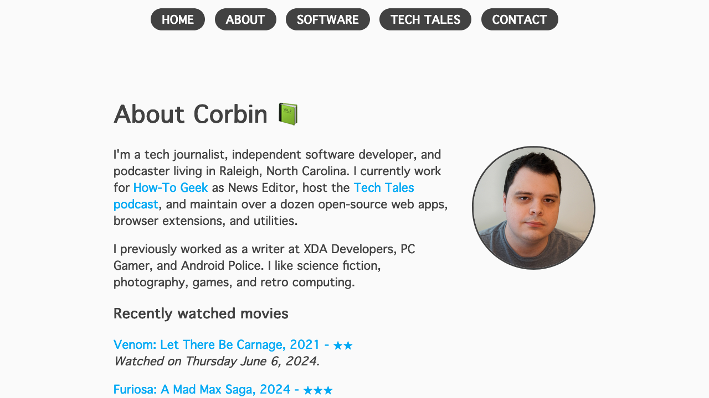
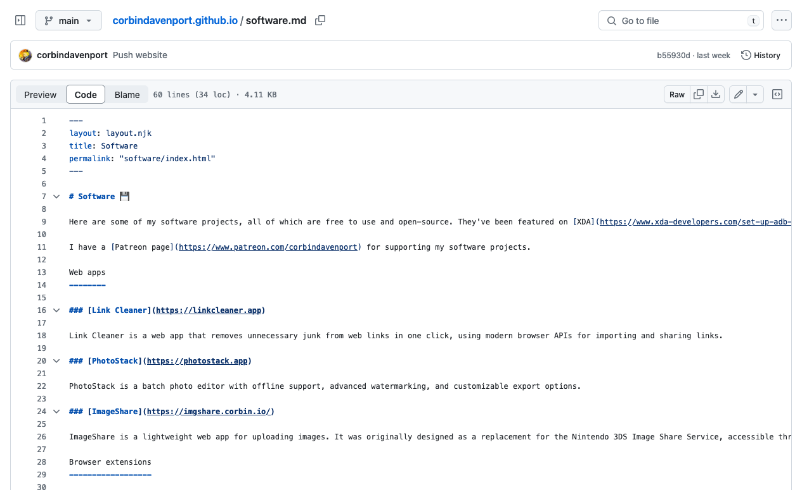
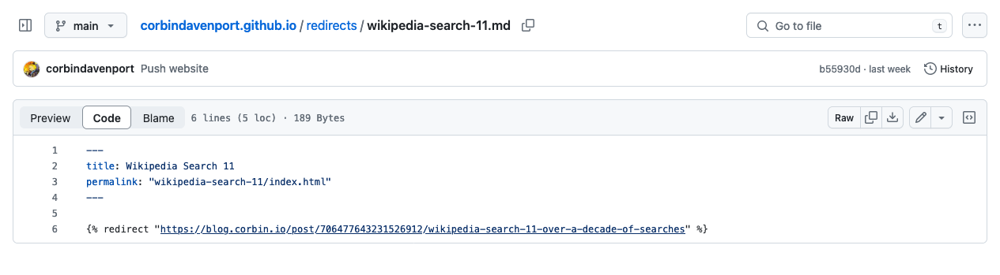
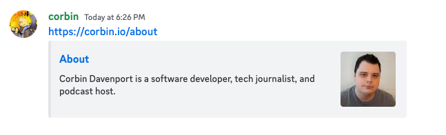
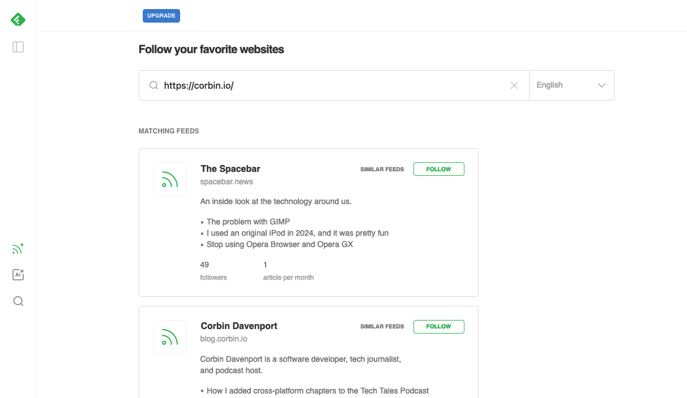
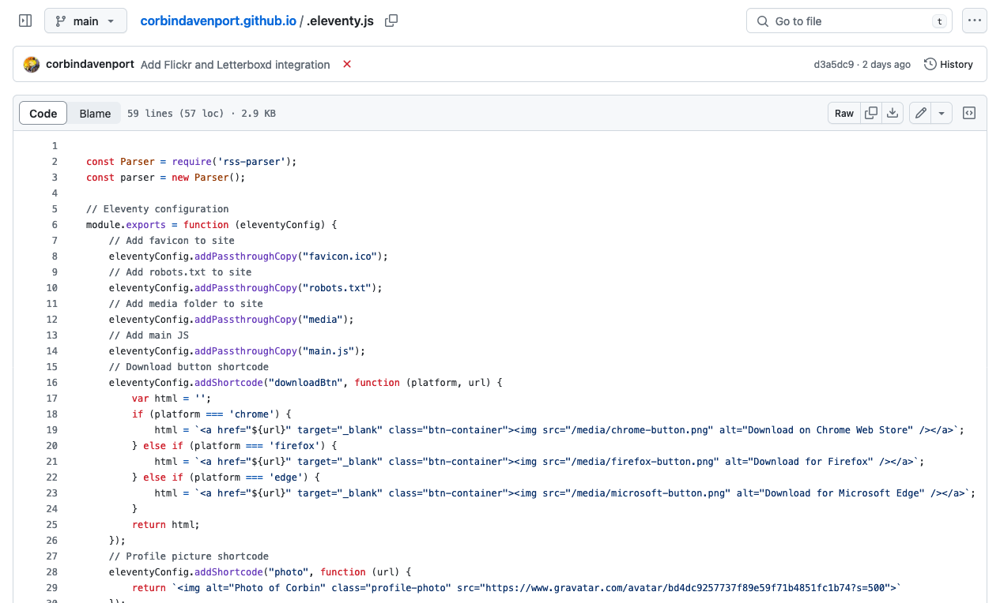
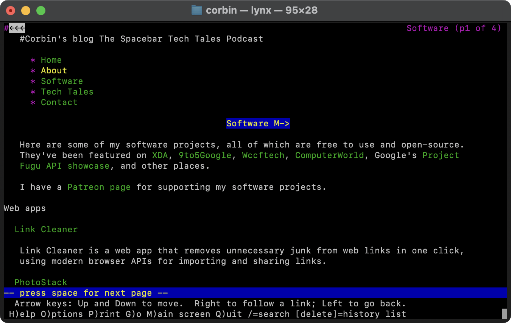

I just finished making my new personal site, powered by the Eleventy static site generator, a custom template, and GitHub Actions. It’s fast, easy for me to maintain, and doesn’t cost me anything to host. Here’s how I made it.
My previous personal site was a static HTML site hosted on GitHub Pages, which I initially made in 2018 to replace my Blogger-based site (that’s a throwback!). I made the layout and site theme myself instead of using a heavier web framework, and I moved the blog section to Tumblr with a new blog.corbin.io domain. I later tried switching to WordPress managed hosting, but that costs more money, and I wasn’t a fan of most modern WordPress themes and how resource-heavy they were. WordPress is great for larger sites, but it was overkill for my simple personal site.
My ideal setup here would be a site that is easy to edit, gives me full control over the template, and (ideally) doesn’t require paid hosting. My first idea was moving the content to Markdown files, and then using GitHub’s Jekyll integration to generate a static site. Creating a Jekyll theme turned out to be a bit clunkier than I wanted, though, so I started looking at other static site generators.
I eventually discovered Eleventy, which doesn’t have the extensive feature set of Jekyll or some other static site generators, but it looked perfect for my project. It can generate sites from Markdown (or other data formats) using simple HTML templates, and I could keep using free GitHub Pages hosting. It’s also possible to create reusable widget components with contents, which can be filled in by the main Eleventy generation script. The official getting started guide was helpful.
The most clear way for me to talk about my process is just go through each of the files in the GitHub repository, so that’s what I’ll do!
I wrote all the pages for the site, like the About page, in Markdown format. It’s mostly the same syntax that as GitHub, but with an added table at the top to define the page title, permalink, and template layout. This is a huge upgrade over my previous site, where I was writing the <head> and other shared elements in each page and tried to keep them synchronized.

Eleventy converts Markdown format to the equivalent standard HTML code when the site is generated. For example, “# Hello” becomes “<h1>Hello</h1>”. That makes styling the site with CSS in the layout template easy, and it’s great for accessibility. You can also put custom HTML content in the Markdown file and it will render as expected.
It’s much easier for me to make quick edits to Markdown files than raw HTML. I can even do it from the GitHub app on my phone.
GitHub Pages allows you to create a custom 404 page, which appears to still work with custom site generators as long as the resulting file is called “404.md” or “404.html” in the main directory. I made one and set the permalink to “404.html” and it works as expected.
My earlier site had a few redirecting pages, mostly for blog posts that used to be on my main domain but were later moved to my blog. Those had to be in specific locations to work with my earlier site, cluttering up the site structure, but Eleventy gave me a much cleaner solution. I created a “redirects” folder for all of them, set the permalinks to the proper locations, and added an HTML redirect element to the Markdown file.

For example, I originally had a blog post at corbin.io/wikipedia-search-11. When I moved that blog post to my Tumblr blog, I had to create a redirect HTML file at that specific location (root/wikipedia-search-11/index.html), which then cluttered up the root directory of my code repository. With Eleventy, I can place the redirects anywhere I want and call the files anything I want. I made a page in my “redirects” directory with the permalink “wikipedia-search-11/index.html” and it worked exactly as expected.
Eleventy uses Node.js, so there’s a package.json file in the root directory that tells Node what packages are needed. Right now, my only dependencies are RSS parser (more on that later) and Eleventy. Running the setup command “npm install” installs those packages.
The layout theme is stored at _includes/layout.njk, though the file can be called anything. It contains everything around the main content, including the general HTML page structure, any links to JavaScript or CSS files, and so on.
My custom template is a minimalist one-column layout and some basic CSS. I went back and forth on possible site designs, including some more 90s-inspired layouts, but I ended up staying close to the old design. Some of the changes include a new navigation bar that changes size based on screen size (no hamburger menu!) and removing Google Fonts.
I also wanted to see if I could make my site render properly on older web browsers, because that’s a fun challenge. However, the Let’s Encrypt SSL certificate that GitHub sets up for my site uses the ISRG Root X1 root certificate, which isn’t available on most platforms and browsers released before the mid-2010s. Legacy web browsers can’t load the site in the first place, so there’s not much of a point in doing that testing. I did add some compatibility tweaks for earlier WebKit and Firefox browsers, though, and the site should work in Internet Explorer 8 and above.
The <head> section contains code for an Open Graph card, so linking any page on platforms like Slack, Facebook, Discord, and iMessage will create a rich preview. The image is set to my current Gravatar image, so if I decide to change my profile picture, it is automatically applied to my personal site at the same time as everything else connected to my Gravatar.

I also added link tags in the <head> for several RSS feeds, including the feed for my personal blog (which is on a Tumblr custom domain) and the RSS for my Tech Tales podcast. If someone puts my website into an RSS reader like Feedly or Inoreader, or they have a browser extension that shows any available RSS feeds, those feeds appear as subscription options.

Finally, I added verification code for the Mastodon social network as a hidden link at the bottom of the <body> section. That allows my site to appear as a verified link on my Mastodon profile.
The .eleventy.js file is where the magic happens: it’s the Node script that generates the site with all the custom configuration options. I added “passthroughs” for the media folder, robots.txt file, favicon file, and other resources that need to be copied to the generated site for everything to work.

This is also where I defined shortcodes that I use in some pages, which are reusable components that Eleventy can drop in during the generation process. For example, I have download buttons for browser extensions on my software page, and I didn’t want to manually define the same image and link structure over a dozen times. I defined a “downloadBtn” shortcode with arguments for the platform and URL, which generates a download link button with that data. I also made a shortcode for the HTML redirect for my redirect pages, and other functions I’m using on other pages.
I also created a “letterboxd” shortcode for displaying my recent Letterboxd reviews on my about page. You can use any Node code in this script, so I’m using the rss-parser Node library to download the RSS feed from my Letterboxd profile and parse it in HTML format with links. My custom “flickr” shortcode does the same for my recent Flickr images.
The final piece is the GitHub Action for building and deploying the website. It runs after each new commit and automatically once a day (so data used in the Letterboxd and Flickr shortcodes is fresh). The script checks out the repository code, installs all the NPM dependencies, runs Eleventy to generate the site, and then uploads the package to GitHub Pages.
With this integration, I can make changes to my site from anywhere, and then a minute or two later the changes are live on the site. The code repository isn’t even cluttered with the generated HTML files, since I added the “_site/” output directory to the gitignore file.
I’m pretty happy with my new personal site. It’s fast to load, easy for me to edit from anywhere, and completely free to host. Since all the core content is server-side generated, it even works in text-based browsers like Lynx.

If you want to set up something similar, feel free to fork my site’s repository on GitHub.